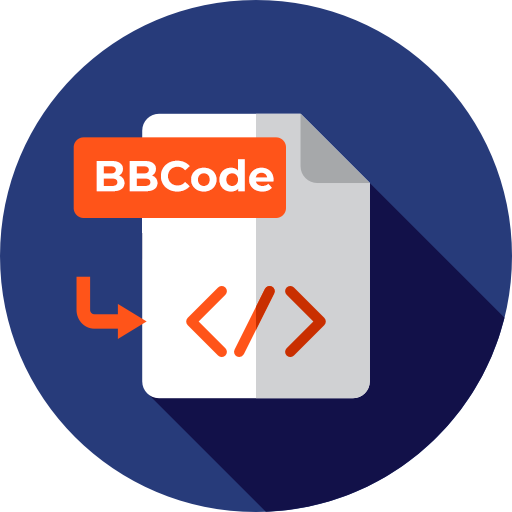
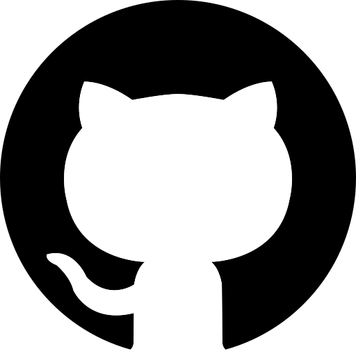

Moje Cesta Coby Tvůrce
"Tvoření je naše zbrojení" ~ Jana Velkáčová
Informatika je mou velikou životní láskou už od základky. Bylo to právě tam, kde jsem ve svých 13 letech napsal svojí první webovku na portálu Mobafire. Byla ošklivá, proložena mizernou angličtinou, po všech stránkách propadák, ale byl to začátek něčeho velkého.
Když jsem o pár let později volil na jakou střední školu se přihlásit, bylo to už jasné. Chci se naučit víc o počítačích a o všech úžasných věcech, které bych skrz ně mohl vytvořit. Sotva jsem se rozkoukal a už jsem začal nažhavovat svoje první projekty. Začal jsem se učit s Photoshopem, seznamoval se s mými prvními programovacími jazyky, začal zjišťovat co mě baví a čemu bych se chtěl ve svém životě věnovat. Za nedlouho jsem vytvořil antalogii své původní webovky jménem Seven Wonders, tou dobou obří výzva napsat webovku v angličtině o víc jak 400 000 znacích... trvalo to měsíce. Dnes jeden z mých zatím největších životních úspěchů, která od té doby vyhrála na Mobafire už 7 finančně ohodnocených soutěží v řadě (a stále jede!).
Na střední však nevznikla jen chuť tvořit webovky, začal jsem vytvářet své první stolní hry. Vymýšlení mechanismů, systémů jak takové hry budou fungovat, hledání chyb, balancování strategií, testování s rodinou, grafický design kartiček, user experience... bylo to náročné, ale zároveň neuvěřitelně naplňující. Proto kdykoliv jsem po těžkém dni ve škole našel mezi pařením videoher alespoň pár minutek na tvorbu nové kartičky nebo mechaniky, šel jsem do toho. A po 3 letech, když byl projekt konečně hotový a já dostal k Vánocům od maminky svojí první inkoustovou tiskárnu, kartičky si vytiskl a vystříhal a poprvé držel v rukou to co jsem celou střední mohl vidět jen jako shluk pixelů ve photoshop editoru, byl to nezapomenutelný pocit.
Po konci střední začala vejška a s ní i mnohém více volného času. A s větším množstvím času přišla i záplava dalších projektů. Rozpracoval jsem svůj vůbec první překladatelský projekt, začal programovat svůj první mód do Minecraftu v jazyku Java, začal vytvářet modifikace, rozšíření a materiály do mých oblíbených her jak počítačových tak stolních. Poznával jsem nové softwary a programy. S příchodem AI se navíc začaly objevovat nové možnosti a já se pomalu učil jak jí pomalu integrovat do mé práce, abych byl ještě rychlejší a lepší a abych nespadl do pastí, které na mě může při svých příležitostných halucinacích nastražit :D
S rokem 2026 přišla úplně nová touha. Touha sdílet. Mám tolik úžasných materiálů, které jsem vytvořil a všechny budou hnít v zaprášené poličce a na mém SSD disku?!! To přece nemohu dopustit. A tak začal můj nejnovější projekt, na který můj drahý čtenáři právě koukáš - moje první opravdová HTML stránka. Uvidím za jak dlouho se mi to tu podaří zaplnit obsahem. Jestli to stihnu do léta, tk bych byl opravdu machr, ale uvidíme... ^^

Můj Přístup k Tvorbě
Hlavní pilíře mého fungování jako tvůrce
Když vytvářím nové věci, nejdůležitějším aspektem je pro mě vždycky User experience. K čemu mi je, že materiál funguje, když nikdo nebude vědět jak s ním pracovat? Když jsem vytiskl svou první karetní hru s hrůzou jsem zjistil, že moje maminka vlastně není schopná přečíst text na jednotlivých kartičkách, že jí vlastně dělá problém angličtina, kterou jsem příležitostně použil, že je na ní určitá mechanika až příliš obtížná. Byl to ten moment, kdy jsem si uvědomil jak důležité je tvořit s představou konečného uživatele ve své hlavě. Jaká jsou jeho smyslová omezení? Na co je zvyklý? Co od produktu vlastně chce? Jak mohu nejlépe uspokojit jeho potřeby?
S aspektem user experience přichází i druhá lekce, kterou jsem si odnesl - důležitost Zpětné vazby. Jakkoliv se mohu snažit vcítit se do uživatele, nakonec on je ten kdo zná sám sebe nejvíc. A proto, pokud chci správně analyzovat jeho potřeby, občas je tou nejlepší cestou, prostě se ho zeptat. A hlavně bude-li jeho zpětná vazba tvrdá, nebrat si jí moc osobně a nestavit se do defenzivní sebeobhajoby. Pak bych si z ní totiž nebyl schopný nic odnést a nezlepšit současnou iteraci projektu.
Posledním pilířem mé tvorby je Problem solving. Když něco nefunguje jak bych si představoval, když kód háže chybu, CSSko se nenačítá, program padá, hlavní je zachovat chladnou hlavu. Nezhroutit se z toho, nezačít mlátit do klávesnice a raději k tomu přistoupit jako k hádance. Co se nepovedlo? Kde jsem udělal chybu? Občas si jí všimnu hned, jindy to chce trochu času, ale každý problém má řešení. Mnohdy to může být řešení, které je zvláštní nebo neortodoxní, proto je klíčové mít otevřenou mysl a přistupovat k problému logicky. Program nezajímají moje pocity a problém nezmizí, když na něj budu dost hlasitě křičet. Možná ale zmizí, když vyzkouším novou strategii.
Technologie
Programovací jazyky
Značkovací jazyky

Programy a Software

Microsoft Office
Vzdělání
2019 – 2023
SŠ Automobilní a Informatiky — Informatika
Maturita
2024 – současnost
Česká Zemědělská Univerzita v Praze
Provozně ekonomická fakulta — Informatika
Certifikace
Angličtina: C1
ECDL — The Digital Skills Standard
- M2: Computer Essentials
- M3: Documents
- M7: Online Essentials
- M15: Information Literacy
- M6: Presentation
Praxe
Léto 2021 — Technická podpora
MŠ Bolonská
- Tvorba prezentací
- Photoshop
- Obsluha interaktivních tabulí
Jaro 2022 — Technická podpora
ZŠ Křimická
- Asistování v ICT učebně